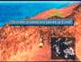
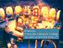
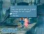
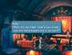

|
The
"Chocobo Hot and Cold" game, along with all the treasure
hunting it entails, is by far the most complex side quest in FINAL
FANTASY IX. Yet completing the side quest and getting the gold Choco
is essential to unlocking so many other side quests. One such quest
that depends on the gold Choco is the revival of Mognet.
On
your way through Esto Gaza to Mount Gulug, delivering a letter to
Mogrika the moogle causes her to indicate that Mognet is shutting
down because of an accident. From this point on, most of the moogles
will not have any letters to deliver and won't ask you to deliver
any due to problems at the home office, Mognet Central.
You
can reach Mognet Central with a light-blue chocobo (REEF chocobo)
on Disc 3. On the east side of this island, you can find a crack
in the mountain. Feed Choco a Dead Pepper to make him open the crack,
revealing Mognet Central.
|  |
Inside,
the moogle Artemicion confesses that he used too much of a certain
"thing" to make his fur glossy, and there wasn't enough
left to use on the machine that keeps Mognet running. Leave
Mognet Central and travel south to Alexandria. Then speak to
Kupo at the bell tower ruins, and he'll give you a letter to
Atla. Thus begins a chain of letters that MUST be delivered
from moogle to moogle in order to revive the Mognet. Although
the moogles tell you which moogle to deliver to, they don't
mention where that moogle is located! |
 |
 TIP TIP
KEYWORD: MOOGL8 |
|
Kupo
Nut Overflow
|
| Each
time you deliver a letter during this sequence, the moogles
give you Kupo Nuts if you don't already have one in your Key
Items inventory. Return to the moogle family at Gizamaluke's
Grotto each time you get one, and exchange each Kupo Nut for
an item. By the time you're through, there should be four or
five new little moogles running around! |
Atla
is the moogle at Burmecia. Return there now and deliver the letter.
Atla wants you to take a letter to Mogryo, the moogle standing outside
the chocobo farm at the Black Mage Village. Mogryo has a letter
for Kumool. Return to Ipsen's Castle and exchange letters with Kumool
in the courtyard. You receive a letter for Mois, the moogle from
the Ice Cavern, in return.
However,
the Ice Cavern is now blocked by roots that have grown over each
entrance. Mois has moved to Qu's Marsh on the Mist Continent, and
now stands outside the former entrance to Fossil Roo. Make sure
you have Quina in your party, or else you won't have access to Fossil
Roo. Mois has a letter for Noggy, the moogle at Daguerreo. Noggy,
in turn, sends you back to Kupo in Alexandria with a final letter.
|  |
When
Kupo reads the letter, you'll notice that it says someone in
Alexandria has the item needed. Kupo isn't any help, but we'll
save you the trouble! |
| Talk
to Ruby in the Alexandria Mini-Theater, and she immediately
hands over some of her hair gel, otherwise known as Superslick.
Return to Mognet Central and turn over the item to Artemicion.
The Mognet gets back to business, and you receive a Protect
Ring for helping restore Mognet.
|
 |
|
){kind=link}
){kind=link}
){kind=link}
){kind=link}
){kind=link}